Equalizer
Up to 12 bands (bells, shelves, notch, band pass and 12–48 dB/oct cuts) drawn right on the live spectrum before and after the EQ. Double-click to add a band, drag it to set its frequency and gain, and use the mouse wheel for its width.
Chrome extension · free and open source
Route the sound of any browser tab through a chain of EQ, compressors, a limiter, gate, denoiser, filter, de-esser and bass booster, and see it on live analyzers and a loudness meter. Tame loud videos, clarify podcasts or make laptop speakers sound bigger.
The demo runs the real audio engine in your browser with an original drum & bass demo track or an audio file of your own. Nothing is uploaded.
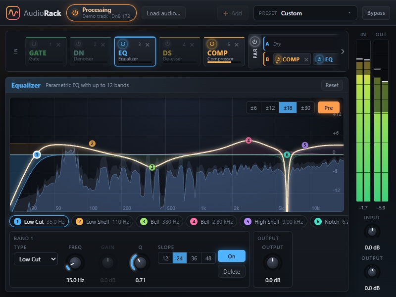
Add effects, drag them into the order you want, or side by side in parallel branches, and bypass any of them with a click. Bypassing crossfades, so there are no clicks or pops.
Up to 12 bands (bells, shelves, notch, band pass and 12–48 dB/oct cuts) drawn right on the live spectrum before and after the EQ. Double-click to add a band, drag it to set its frequency and gain, and use the mouse wheel for its width.

Evens out the level: whatever rises above the threshold is turned down by the ratio. The transfer curve shows the setting and the history shows the level and the gain reduction as they happen. Peak or RMS detection, a sidechain filter that ignores the bass, auto makeup gain and a mix knob for parallel compression.
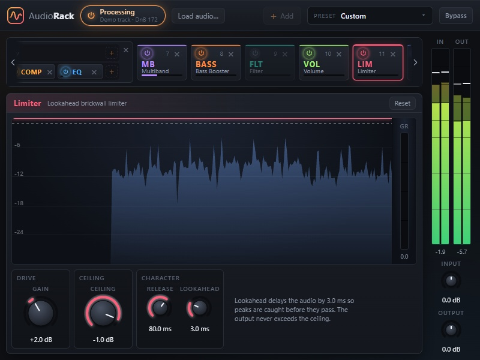
A brickwall for the end of the chain: the output never goes above the ceiling. It looks a few milliseconds ahead, so peaks are caught smoothly instead of clipped, and the drive pushes the level into it for a louder sound.

Splits the sound into two to four bands on phase-aligned crossovers and compresses each one on its own, so a booming bass no longer pushes down the voice. Drag the crossovers in the display; solo, mute or bypass any band.
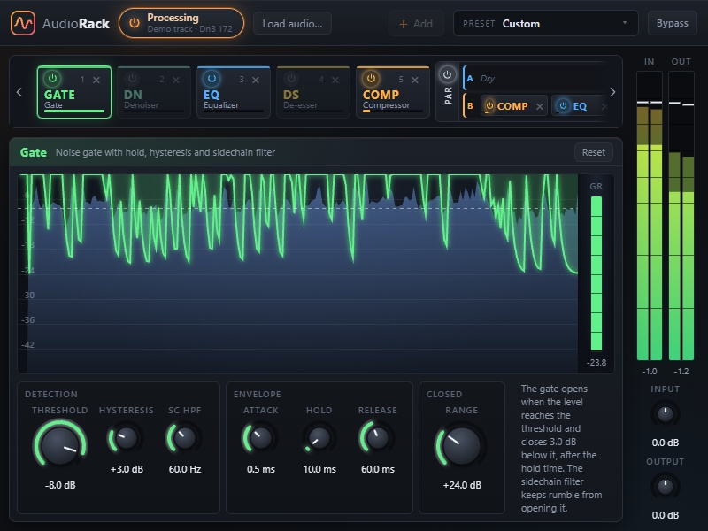
Turns the sound down while it stays below the threshold, to silence hum and hiss between phrases or to tighten drums. Hold and hysteresis keep it from chattering, and the sidechain filter keeps rumble from opening it.
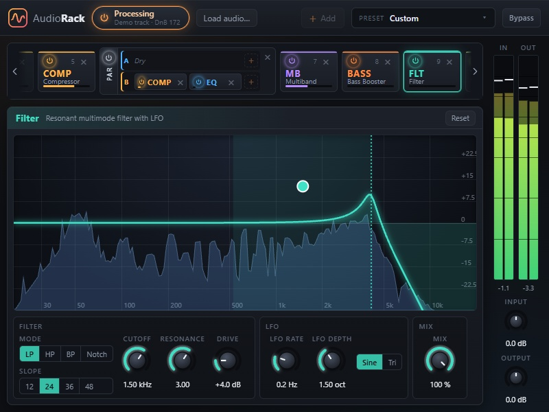
A resonant low pass, high pass, band pass or notch with 12–48 dB/oct slopes and drive. The LFO sweeps the cutoff for slowly moving filter effects, and the mix knob blends in the dry sound.
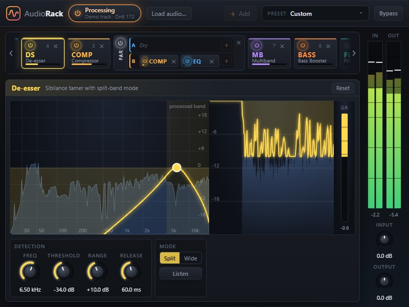
Softens harsh “s” and “sh” sounds in speech and vocals. It listens to a narrow band around the sibilance and turns down only that band, or the whole signal in wideband mode. Listen mode lets you hear exactly what it catches.
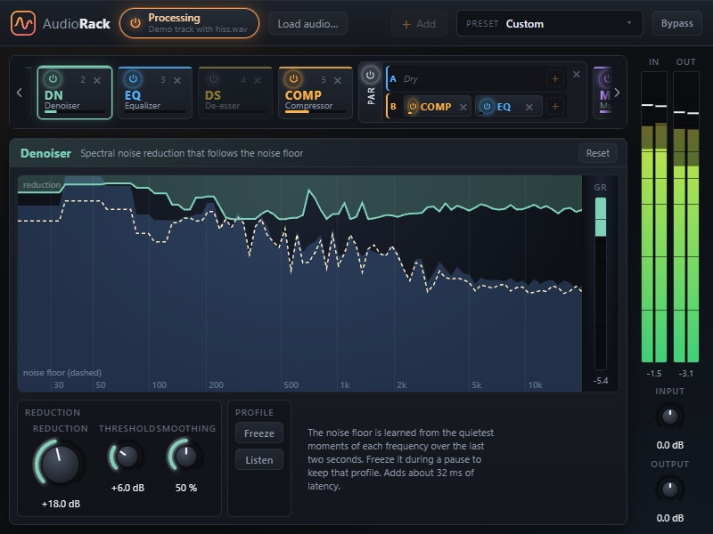
Reduces steady background noise such as hiss, hum and fan noise. It learns the noise floor of each frequency from the quietest moments and turns down whatever does not rise clearly above it. Freeze the profile during a pause, or listen to what it removes.
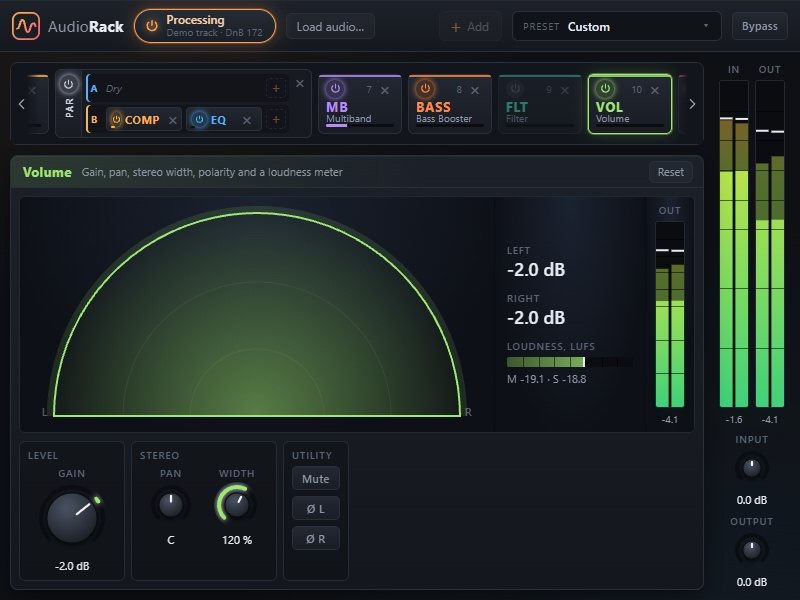
Gain, pan, stereo width from mono to extra wide and a polarity flip for each channel, with a loudness bar that shows the momentary and short-term loudness of its output in LUFS.
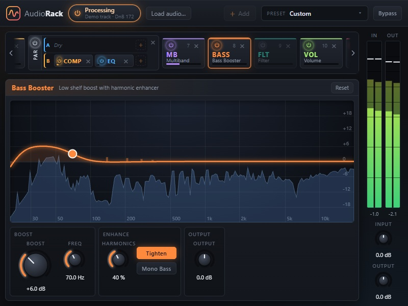
A low shelf boost plus generated harmonics that make the bass audible even on laptop and phone speakers. A rumble filter keeps the boost clean, and mono bass centers the low end.
A rack is more than a straight line. Split the signal into branches, and decide whether a tab shares the rack or gets its own.
Up to four branches receive the same input and are summed on a small mixer: a fader and meter per branch, with pan, mute, solo and polarity. Drag effects into a branch; an empty branch carries the dry signal, so a compressor next to it gives parallel compression. Branches are delay-compensated, so a limiter's lookahead never smears the mix.
Every tab gets its own chain, started from your shared rack: a voice rack for a podcast next to a bass-heavy one for music. Switch a tab to All tabs when it should follow the shared rack instead. A tab's own rack lasts until the tab is closed.
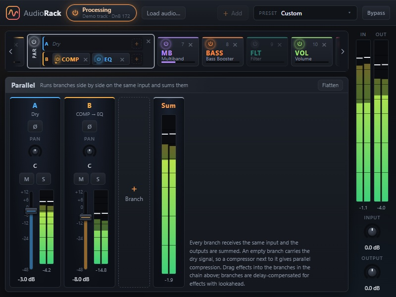
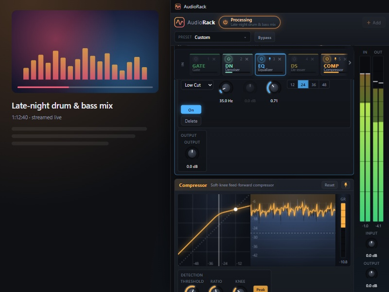
The side panel button puts the tab's rack in the browser's side panel, so you can tweak the sound while you watch. The panel belongs to the tab and comes back whenever you return to it.
Pin effects and analyzers to keep them open. They stack in chain order, and the chain stays at the top. Picking an effect scrolls to it; one that isn't pinned opens in its place until you pick another.
Analyzers pass the audio through untouched. Put them anywhere in the chain, for example one before and one after the EQ.
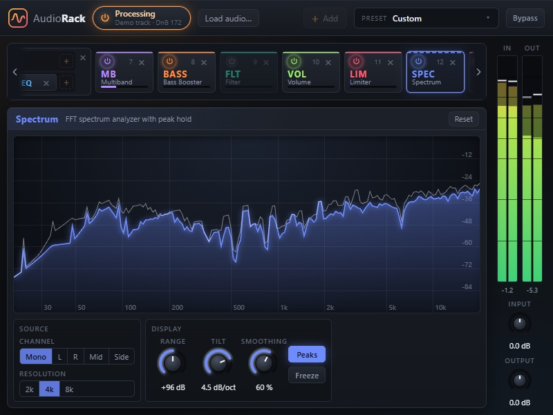
The frequency content as a smooth curve, from a 2k to 8k point FFT of mono, left, right, mid or side. Peak hold, freeze, adjustable tilt and smoothing, and a readout of frequency, musical note and level under the mouse.
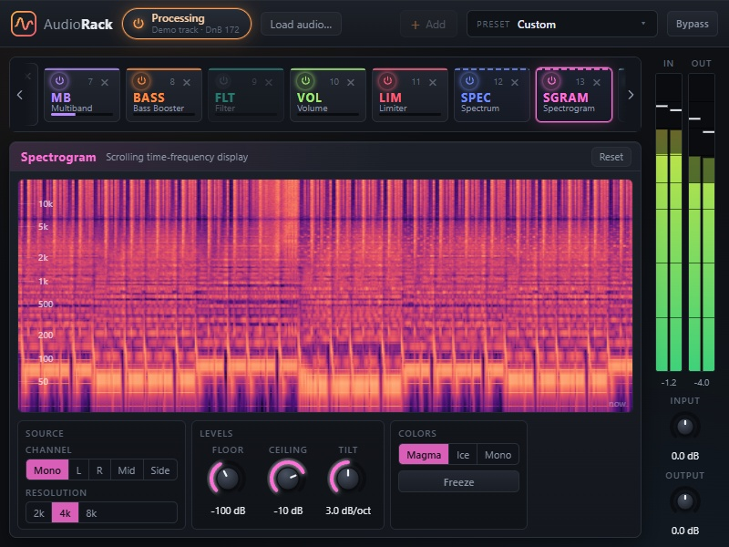
Frequency over time as a scrolling image, where hi-hats, basslines and noise each leave their own trace. Adjust the floor and ceiling to bring out quiet detail, and pick the Magma, Ice or Mono palette.
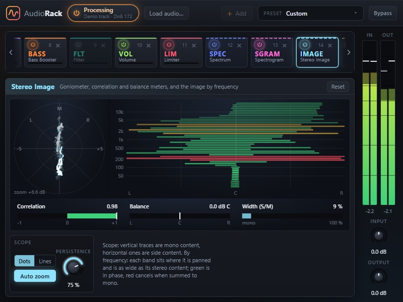
A stereo scope next to the image by frequency: each band sits where it is panned, is as wide as its stereo content and turns red where it would cancel in mono. Correlation, balance and width meters run below.
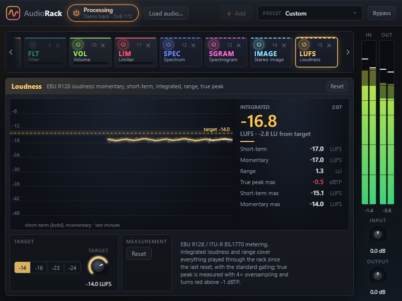
An EBU R128 loudness meter: momentary, short-term and gated integrated loudness, loudness range and 4× oversampled true peak. Measure a whole show against a target such as −14 LUFS for streaming or −23 LUFS for broadcast.
audiorack-*.zip from the
GitHub releases
and unzip it.
chrome://extensions, turn on
Developer mode, choose Load unpacked and pick the unzipped
folder. Brave, Edge and other Chromium browsers work the same way.
Requires Chrome 116 or newer. A Chrome Web Store listing is on its way.
All processing happens on your device. AudioRack never records or uploads audio, makes no network requests and contains no analytics. It stores only your rack and presets. Read the privacy policy.